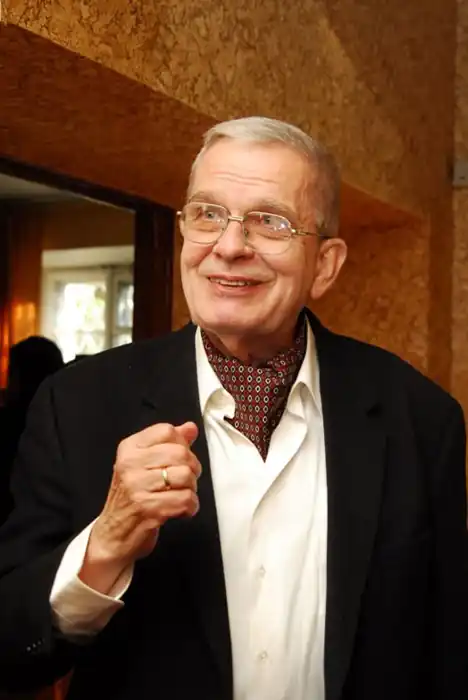

Литовський поет, перекладач, літературознавець, есеїст, дисидент і правозахисник.
Син литовського поета Антанаса Венцлови. Під час Великої Вітчизняної війни, коли батько займав високі радянські посади, перебував в евакуації, жив у родичів у Вільнюсі та Каунасі. З 1946 року жив у Вільнюсі.
Закінчив Вільнюський університет (спеціальність литовська мова і література; 1960). Один із засновників Литовської Гельсінської групи (заснована 1 грудня 1976 року). У 1977 році висланий з Радянського Союзу. В еміграції підтримував близькі стосунки з Йосипом Бродським і Чеславом Мілошем. Професор слов'янських мов і літератур в Єльському університеті (США). Літературна діяльність Дебютував у пресі науково-популярною книгою "Ракети, планети і ми" ("Raketos, planetos ir mes", 1962). Перша книга поезій "Знак мови" ("Kalbos ženklas", 1972). Перекладав на литовську мову вірші Анни Ахматової, Бориса Пастернака, Йосипа Бродського, Осипа Мандельштама, Хлєбнікова, Т. З. Еліота, Шарля Бодлера, Оскара Мілоша, Лорки, Рільке, Одена, Паунда, Превера, Кароля Войтили, Збігнева Херберта, Чеслава Мілоша, Віслави Шимборської та інших поетів. Видав кілька книг віршів, збірок публіцистики, літературно-критичних та історико-літературних праць, збірку своїх перекладів, також путівник по Вільнюсу (переведений на ряд європейських мов), книгу "Імена Вільнюса" ("Vilniaus vardai"; сам автор характеризує її як свого роду особисту енциклопедію вильнюсцев від Міндовга і Гедиміна до Мілоша; включає 564 персоналії). У 2009 році вийшов англійський варіант цієї книги ("Vilnius. A Guide to Its Names and People"). Вірші Томаса Венцлови перекладалися на англійську, угорська, німецька, польська, португальська, російська, словенська, чеська, шведська та інші мови. Нагороди та звання За творчі заслуги нагороджений хрестом Командора ордена Великого князя литовського Гядімінаса (1995), хрестом офіцера Ордена Хреста Витиса (1999), Національною премією у галузі культури і мистецтва (2000), статуеткою Святого Христофора (нагорода міста Вільнюса; 2002), Ятвяжской премією Поетичної осені в Друскінінкай (2005). Доктор honoris causa Університету Марії Кюрі-Склодовської в Любліні (1991), Ягеллонського університету в Кракові (2000), Університету Миколая Коперника в Торуні (2005), Університету Витовта Великого в Каунасі (2010; рішення про присвоєння почесного звання " за заслуги перед наукою, культурою та університетом було прийнято на засіданні Сенату університету 24 лютого, церемонія вручення регалій відбулася 1 червня 2010 року). 8 січня 2007 у Вільнюсі йому була вручена медаль в пам'ять Угорської революції 1956 року за важливий інтелектуальний внесок у сучасне розуміння справжнього значення угорського антирадянського повстання.